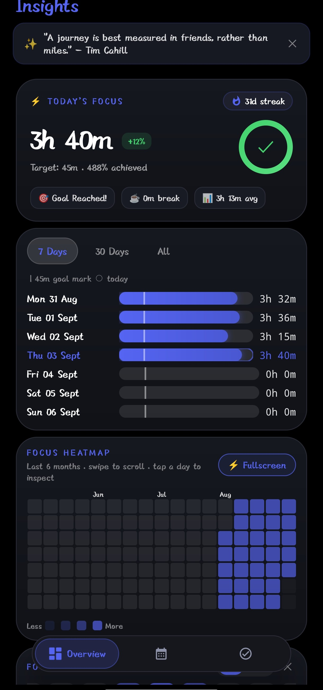
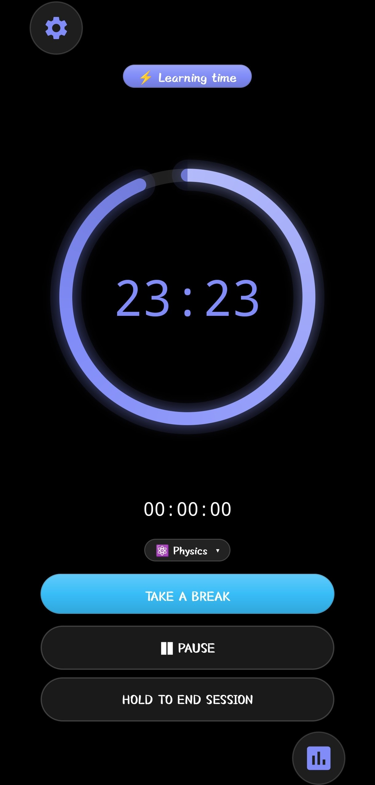
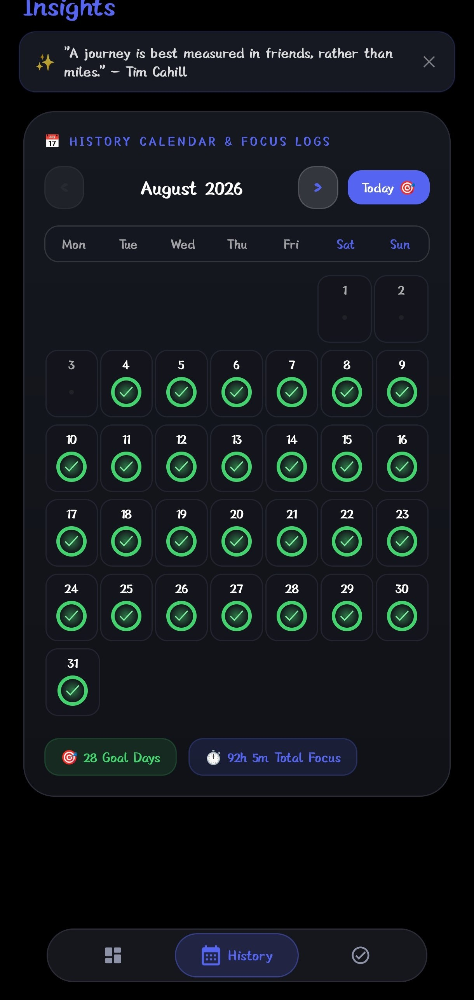
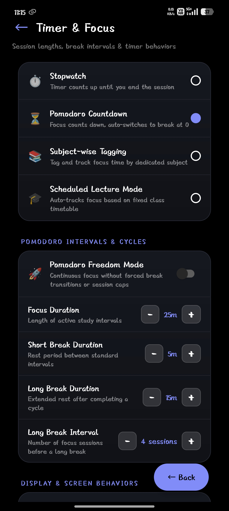
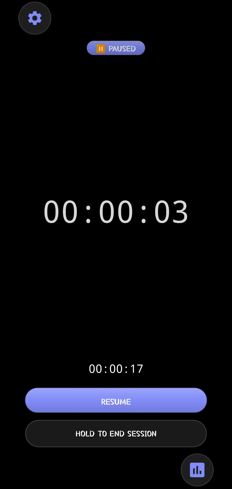
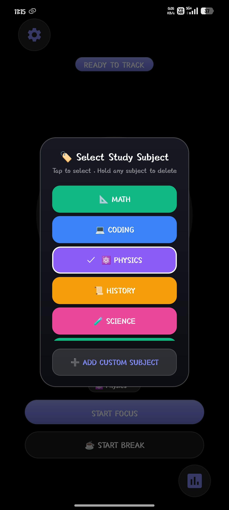
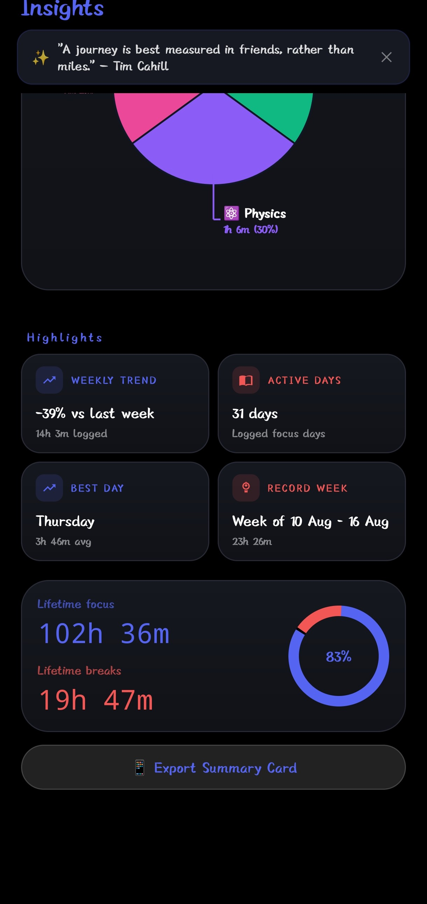
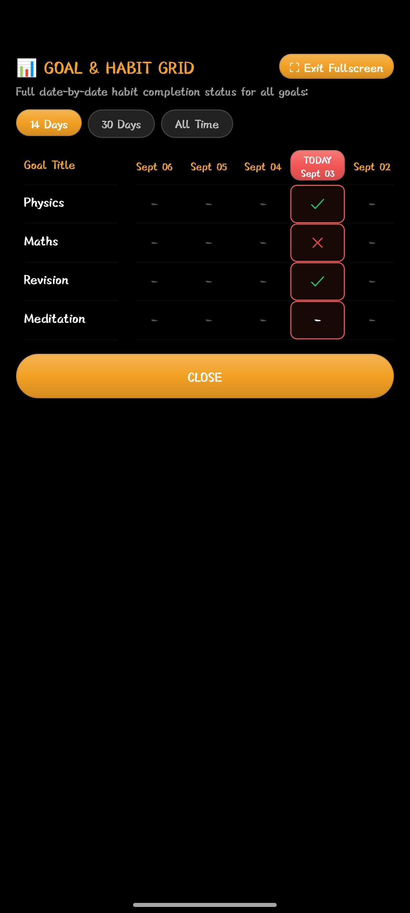
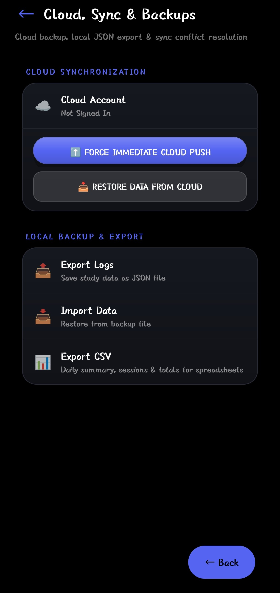

Track Your Progress.
And Every Study Session.
The distraction-free Android companion to track subject hours, maintain daily habit streaks, configure custom Pomodoro intervals, and visualize your real study progress over time.



Active Pomodoro Focus Engine
Real-time countdown dial with ambient soundscapes, customizable work cycles, and distraction-free visual stamina feedback.
Explore the Native Android Screens
← Swipe left/right on mobile to flip screens →
Pomodoro Interval Customization
Fine-tune every aspect of your focus sessions: adjust work blocks (25/50m), break durations, auto-start cycles, and ambient sound options.

Unconstrained Focus Stopwatch
For open-ended deep work sessions or untimed problem-solving drills. Seamless pause, lap logging, and instant subject tag switching.

Custom Subject & Tag Creation
Organize multiple study streams effortlessly. Assign custom color palettes, configure daily targets, and manage subject priority in one clean view.

Hour-by-Hour Study Heatmaps
Granular breakdown of your daily study distribution. Identify your cognitive prime times and compare weekly study stamina gains with visual graphs.

Daily Habits & Goal History
Track secondary study habits alongside your timers: review flashcards, solve mock exam papers, read textbook chapters, and maintain streak history.

Google Cloud Sync & Backup
Enjoy offline freedom with optional cloud synchronization. Sign in with Google to automatically back up your study streaks, subjects, and analytics across Android devices.

How StudyTimer Compares to Generic Timer Apps
Built specifically around the actual workflow of students, programmers, and exam candidates.
| Focus Feature | StudyTimer (Android) | Standard Stopwatches | Generic Pomodoro Apps |
|---|---|---|---|
| Subject Tags & Targets | ✓ Unlimited Subjects & Targets | ✕ None | ✕ Paywalled / Basic |
| Study Streak Calendar | ✓ Visual Monthly Streaks | ✕ None | ✕ Limited |
| Deep Time Heatmaps | ✓ Free In-Depth Analytics | ✕ None | ✕ Monthly Subscription |
| Offline-First Room DB | ✓ 100% Offline Compatible | ✓ Offline | ✕ Requires Connection |
| Ad Distraction Policy | ✓ 100% Ad-Free & Clean | ✕ Annoying Banner Ads | ✕ Video Interstitials |
| Google Cloud Sync | ✓ Encrypted Supabase RLS | ✕ Local Only | ✕ Clunky / Proprietary |
Frequently Asked Study Questions
Everything you need to know about StudyTimer for Android, custom subjects, and data safety.
Yes, StudyTimer is 100% free! All core features including custom subject timers, streak management, deep analytics charts, and cloud sync are fully available with zero hidden paywalls or subscription fees.
You can create unlimited custom subjects (e.g. Physics, Coding, Mathematics, History) with custom hex color tags. Set target daily or weekly hours, and the app automatically tracks your real-time progress bars as you study.
Yes. StudyTimer is built with an offline-first architecture using a secure local database on your Android device. All your focus sessions, habit records, and subject stats are recorded locally and sync automatically when your device reconnects to the network.
Tap the Get APK button on this site. Once downloaded, open the APK from your notification bar or Downloads folder. If prompted by Android, toggle "Allow from this source" in security settings, and tap Install. The app is 100% safe and verified.
Open the app settings and sign in with your Google Account. Your subjects, daily targets, and session streaks will back up in real-time, allowing you to restore your progress if you switch devices.
You can instantly delete all account records within the app (Settings > Account > Delete Account) or submit a deletion request via our Account Deletion Portal.